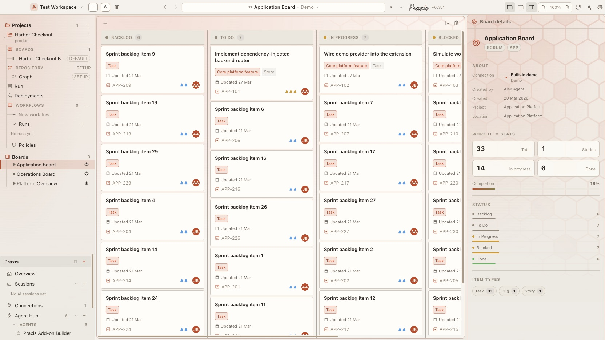
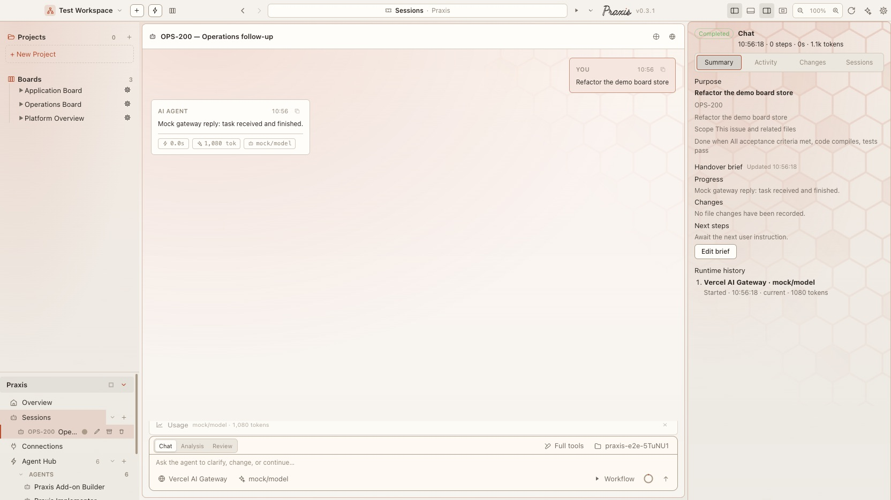
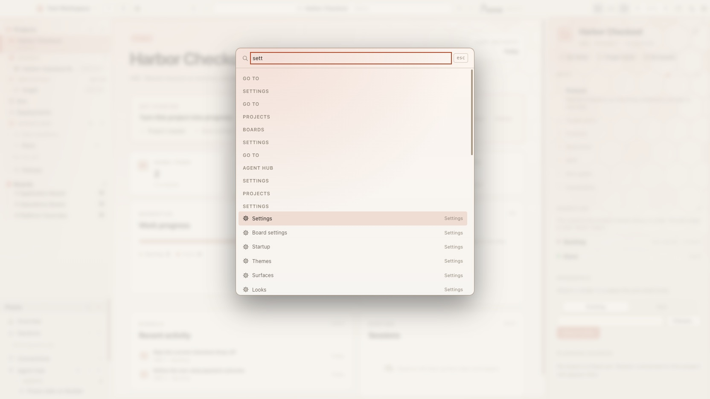

Praxis desktop · first run
Your First Praxis Project
Praxis keeps a piece of work and the AI sessions that move it in the same place: a board you can see, tickets you can hand to an agent, and the repository they touch. This walks the first ten minutes.
Where it stands now · 23 Sep 2026
The same first ten minutes, as they look today
The walk below still holds. These are the real screens for each step, taken today — including the project home and board that step 3 draws as a sketch.





- NewTake it with you. Pair a phone from Settings → Mobile access to approve runs, answer an agent's permission request and send the next message from the phone — see Praxis on Your Phone.
- NewWorkflows pick an AI per stage. Plan with one AI, implement with another; when an AI runs out of budget the run asks, switches or stops — your choice when you start it.
- ChangedSettings has grown. Agent Runtime now has tabs for agents, skills, instruction files, runtimes and advanced options, and a working style every AI is asked to follow.
Screenshots from Praxis desktop v0.3.1 (today's main) · the rest of this page is the original write-up, kept as it was. New: Praxis on Your Phone.
Open Praxis and make something
The first screen asks for one thing: a project. Choose New project to start from scratch, or Create from an existing folder if you already have a repository you want Praxis to work with. You do not have to set up a workspace first — one is made for you and can be renamed whenever you like.
There is also Skip for now, which drops you straight into the empty app with a workspace ready. Nothing you choose here is permanent.
Three questions, then it exists
Creating a project is three steps: pick a type, give it a name, and look at a review of exactly what will be created. That is it — the brief, the board's stages and the AI permissions all take sensible defaults you can change afterwards from the project's home page.
The type is the one choice worth thinking about, because it sets up the board:
| Type | For |
|---|---|
| Software DevelopmentBacklog → Requirements → Architecture → Implementation → Verification → Done | Building or changing a software system. Needs a folder on your computer. |
| Product DevelopmentBacklog → Discovery → Definition → Delivery → Validation → Done | Defining and delivering a product outcome. Can live in Praxis alone, with no folder. |
| ResearchBacklog → Source planning → Evidence → Synthesis → Review → Done | Gathering evidence and producing a recommendation. No folder required. |
| Experiment / PrototypeBacklog → Setup → Running → Observations → Decision → Done | Testing a hypothesis inside a timebox. Needs a folder. |
What you get
The project opens on its home page — a dashboard showing work progress, the brief, recent activity and sessions. It is not empty. Praxis has already written a first draft of the brief for your project type, and put five starter tickets on the board, sitting in Backlog.
Projects
Workspace
Those tickets are a real starting plan for the type you picked, not filler — a Research project begins with Refine research questions and Create the source plan; a Software one with Define requirements and Describe architecture. Edit them, delete them, or work straight through them.
Hand a ticket to an agent
This is the part that makes Praxis different from a board. Press Start a session on the project home, pick a ticket, and an agent goes to work on it.
It plans first, and it asks before it uses a tool — reading a file, running a command — so you see what it intends before it happens. When it is done it reports what it changed. The session stays in the sidebar, so you can reopen the conversation later and see every step it took.
Bring in your real work
The starter board is yours to keep, but most people want their actual tickets. Open Connections in the sidebar and add one — its boards then appear alongside the project.
| Connect | What works today |
|---|---|
| Jira Cloud | The most complete: boards, issues, comments, transitions and linked-epic flows. |
| A folder of markdown plans | Reads feature plans from disk, and can write issue files back. The files stay the source of truth. |
| GitLab | Connection and merge-request flows. Its issue and board model does not match Jira's yet. |
| GitHub | One board per repository, columns synthesized from the repo's own status: … labels. Editing covers summary, description and assignee; comments and status moves round-trip; issue creation is behind a per-connection setting. |
| Demo data | Built-in sample boards for having a look around. Off by default. |
Finding your way after that
Two things are worth learning early. ⌘K (or Ctrl K) opens a command palette that reaches every project, board, session, agent, workflow and settings page by name — it is almost always faster than the sidebar. And Take a tour, on the project home, replays the short walkthrough that points at the four things that matter in the shell.
Praxis reopens where you left off. Close it in the middle of a ticket and it comes back to that ticket, in that project, in that workspace — including which view you were in. If you would rather choose each time, turn it off in Settings → Startup.
Already comfortable?
Praxis Fast Paths covers the same ground for people in a hurry: getting an existing repository in with three clicks, the full keyboard map, what is safe to skip, and how workspaces remember their place.